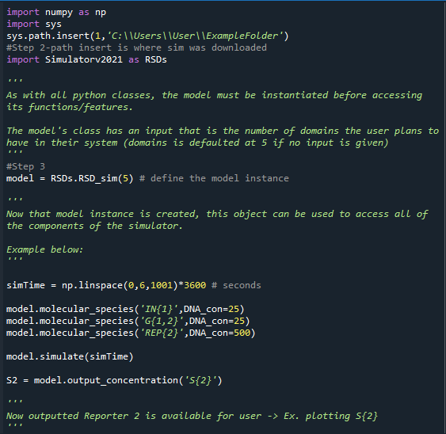

Installing and Initializing Simulator¶
- Before you can use all the functions and features of ctRSD-simulator-2.0, you must first follow thse steps:
Note:
You will need to import the simulator package in your local script to use it. After downloading a local copy of the package you can import the package with the following code:
import sys
sys.path.insert(1,'filepath of simulator on your computer')
import ctRSD_simulator_200 as RSDs
Note *ctRSD_simulator_200* refers to the name of latest simulator package downloaded from GitHub
Please use figure below as an example of these steps.

Code Snippet of Steps Above¶